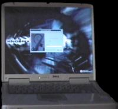
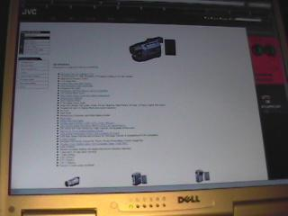

This document describes the installation of Linux on a SmartStep, also describes the hardware and the factory hardware problems of this machine. A SmartStep is a laptop sold by Dell. It is also known as SmartPC in Europe, so installing an SmartStep is the same as installing the SmartPC. The 200N is similar to 250N, then, this document applies too to that model.
Copyright (C) 2003-2005 Igor Támara. Permission is granted to copy, distribute and/or modify this document, I appreciate that if you use this work, not to forget mentioning my name on it.

Knoppix helped installing Debian GNU/Linux on this machine. be aware that this is unstable. But it has worked fine for me.
Use this information at your own risk. I only publish the steps that worked for me and hope it will be useful for you.
We describe the machine specification and some issues that must be addresed before attempting an installation. We include some configuration files that could be useful for some other laptops, since some sections are not specific to Dell, but are specific to models of components that might be used by other manufacturers.
On 2003 July
ACPI section has been enhanced, so the hibernate function of the machine can be used. 2004 Dec. Thanks to CR.
Overheating and cleaning process. 2005 Sept. Thanks to RW.
Dell is know positively for it's customer support. in spite of this, I feel that it wasn't as good as I expected. You can read the whole story in the Complains section.
Dell has a forum where people discuss diverse topics.
There is also a yahoogroup that does not belong to Dell and people speaks open.
When I bought this computer the only options available for operating system were Windows XP Home Edition or Professional, also 2000. Unfortunately there was no option to have an open O.S.
The Specifications given here were taken from Appendix of the owner's manual.
This is a 2.4 gigahertz Pentium IV with a 400 Mhz bus, a first level cache of 8 kb, the second level of 512 kb. An Intel 845 chip set with data bus of 64 bit, DRAM bus of 64 bits, and address bus of 32 bits.
The DDR memory is 512 MegaBytes expandible to 1024 in two slots.
The communication between the computer and external devices or networks can be accomplished with the following:
PCMCIA TI PCI 1520 supporting 1 Type III card or 2 type II cards at a maximum data width of 16 bits on PCMCIA and 32 bits for the CardBus.
Serial : 9 pin connector, 1655C-compatible, 16 byte buffer connector
Parallel : 25 hole connector, unidirectional, bidirectional or ECP
Video : 15 hole connector. For a Monitor.
Microphone : Connector.
Headphone/speaker : Stereo connector.
PS/2 Keyboard/mouse : 6 pin mini-DIN connector
USB : 2 4 pin USB-compliant conector UHCI.
S-Video TV-Out : 7 pin mini-DIN connector
Modem : RJ 11. v.92 56K MDC softmodem AC 97 bus
Network Adapter : RJ 45. RealTek Compatible
IEEE 1394 : 4 pin serial connector
It worths an apart section to be described, it has a 128 bit hardware accelerated a Data bus of 4X AGP performing ATI Rage Mobility M6 with 32 MB DDR. The LCD interface is LVDS and the TV supports NTSC and PAL in S-video and composite modes.
The LCD display is powerful enough to take advantage of the video card, an active TFT matrix SXGA+ of 15 inches with a maximum resolution of 1400x1050 32bpp (16777216 colors)
Has two speakers, and a volume thumb wheel to control them.
It has an 84-key US keyboard and 5 fast keys. Has a touch pad and wheel in four directions called the scroll pad.
The brightness of the screen can be controlled using the keyboard the bright. Also muting, changing contrast, and the output to TV or alternate video.
Not many laptops come with an internal floppy disk drive and a (CD/DVD/CD-RW) combo. The SmartStep does. And also a 40 GB hard disk.
The diskette drive is reported as
FDC 0 is a National Semiconductor PC87306
The Combo CD/DVD/CD-RW is reported as
Vendor: MATSHITA Model: CDRW/DVD UJDA740 Rev: 1.00 Type: CD-ROM ANSI SCSI revision: 02
The Hard disk is reported as
IC25N040ATCS04-0, ATA DISK drive 78140160 sectors (40008 MB) w/1768KiB Cache, CHS=4864/255/63
When the laptop was bought there was an offer of a wireless card (Dell TrueMobile 1100) and an access point (Dell TrueMobile 1184 Wireless Broadband Router), the decission was buying them. They both work.
The first thing to be done is partitioning the disk, so the space is distributed fairly for your own use. I decided to waste 8 Gb on XP Home Edition the rest was for Debian, in order to use knoppix I made some partitions
Disk geometry for /dev/hda: 0.000-38154,375 megabytes Disk label type: msdos Minor Start End Type Filesystem Flags 1 0,031 8001,123 primary ntfs boot 2 8001,123 12770,419 primary ext3 3 12770,420 38154,375 extended 5 12770,451 14676,569 logical ext3 6 14676,601 19445,866 logical ext3 8 19445,897 37668,032 logical ext3 7 37668,063 38154,375 logical linux-swap
As I already said, the first one is the wasting space :) , the second is about 5 Gb to hold the whole knoppix initial installation. The seventh (the last one) is for swapping, and its size is about the size of the available RAM.
The other partitions were left to hold data. This is a plenty of space for someone like me, who doesn't buy too much music or who does not like to get tons of useless software, videos or pictures (no offense intended).
XP came with an NT filesystem, I suggest to use Partition Magic, take a look at Google and see if you can find a downloadable legal version. If not, it will be necessary to boot on the rescue CD of windows, make the partition with fdisk, or maybe use parted if you prefer a GNU tool.
In the two later cases you will have to reinstall windows. This is because Microsft does not provide software to make partitions without loss of data. Quite a coincidence.
Go to knoppix and get an ISO Image, or buy a CD. A friend of yours can also give you a copy, that you will be able to share, since knoppix is distributed under the terms of the GNU/GPL.
There are howtos about installing knoppix, I tried versions 3.1 and 3.2 and both were functional with the SS250N.
You can follow the (really easy) instructions and have a knoppix system working, really fast.
Knoppix auto detects the video card, the soundcard, the network interface, the wireless card if you have plugged it, the floppy, partitions, so you can browse your windows NTFS tree, the CDROM, almost everything, the only thing to be done is tune the system.
This is the output of the lspci command
00:00.0 Host bridge: Intel Corp. 82845 845 (Brookdale) Chipset Host Bridge (rev 04) 00:01.0 PCI bridge: Intel Corp. 82845 845 (Brookdale) Chipset AGP Bridge (rev 04) 00:1e.0 PCI bridge: Intel Corp. 82801BA/CA/DB PCI Bridge (rev 05) 00:1f.0 ISA bridge: Intel Corp. 82801BA ISA Bridge (LPC) (rev 05) 00:1f.1 IDE interface: Intel Corp. 82801BA IDE U100 (rev 05) 00:1f.2 USB Controller: Intel Corp. 82801BA/BAM USB (Hub #1) (rev 05) 00:1f.3 SMBus: Intel Corp. 82801BA/BAM SMBus (rev 05) 00:1f.4 USB Controller: Intel Corp. 82801BA/BAM USB (Hub #2) (rev 05) 00:1f.5 Multimedia audio controller: Intel Corp. 82801BA/BAM AC'97 Audio (rev 05) 00:1f.6 Modem: Intel Corp. Intel 537 [82801BA/BAM AC'97 Modem] (rev 05) 01:00.0 VGA compatible controller: ATI Technologies Inc Radeon Mobility M6 LY 02:03.0 FireWire (IEEE 1394): Texas Instruments TSB43AB21 IEEE-1394a-2000 Controller (PHY/Link) 02:05.0 Ethernet controller: Realtek Semiconductor Co., Ltd. RTL-8139/8139C/8139C+ (rev 10) 02:09.0 CardBus bridge: Texas Instruments PCI1250 PC card Cardbus Controller (rev 01) 02:09.1 CardBus bridge: Texas Instruments PCI1250 PC card Cardbus Controller (rev 01)
I guess it's not necessary to show wath dmesg gives.
The next step is making USB work, also IEEE1394, the modem and the S-Video output.
There are not so many things to worry about when finetuning the system, just a few ones. Due to the excellent job Knoppix does autodetecting hardware, which in turn is based on a strong system as Debian.
There is a thing that annoys a lot of people when installing knoppix: a freeze of the computer when using some login manager like gdm or kdm. Maybe it can be solved removing the DRI support, to see which errors are generating during the launch of X, the following command can be issued
grep EE /var/log/XFree86.0.log
which gives the lines where XFree4 is failing. In the case of the SSN250, the DRI support is responsible for the freeze described previously.
It suffices to comment the lines on /etc/X11/XF86Config-4 that are related to DRI.
For example
.
.
Load "dbe"
# Load "dri"
Load "extmod"
.
.
and
. . #Section "DRI" # Mode 0666 #EndSection . .
The other thing to do is make use of the whole screen, this is 1400x1050(24 bpp). Here is a working files/XF86Config-4 config file, use it at your own risk. This is a warning, see if you survive after trying.
There were a few changes left, use the speed of the bus, and telling the only scsi was the installed on hdc where the CD is attached on the laptop, so it's able to burn.
Example of the line on lilo.conf
append="hdc=scsi idebus=400 apm=power-off nomce"
There is the files/lilo.conf, if you use it, don't forget to run lilo, and make sure the partition scheme is correct with yours. '''Be careful about using this one, since your special configuration of partitions can vary a lot'''.
Make sure the usb and usb-uhci modules are loaded into the kernel, if not there is insmod to help you.
Please read the FileSystems section, before trying the next application.
An application that makes easy to check if the USB ports are correctly configured is usbview, beacuse it allows to see if there are new hardware attached to an USB port.
If you want to know more about USB ports under linux, the the linux usb project is your friend.
I plugged a JVC DVL 815 via USB port. It was reported as '''mass storage device''', so one can mount it as a device on a tree directory, where it's possible to browse and write in the memory card.

In the files/fstab, the line according to the mounting info is at /media/dsc
If you want the USB filesystem to be mounted at boot, put the line
none /proc/bus/usb usbdevfs defaults 0 0
on the fstab file, here is my files/fstab, if you look at this file, you'll find the lines that helped me to mount the ISO images of Debian 3.0R1 that I have on my computer, to help install a little faster through the package system.
As a bonus, here is my files/sources.list. As usual, use it at your own risk.
I have not tried the modem, maybe using the hcfpc drivers. Maybe some others?
The work done at linux1394 is the one that makes it possible to use the firewire port. A few things needs to be done to get it working.
The modules ieee1394, video1394, raw1394, ohci1394 can be loaded via modconf.
Follows the creation of special files (nodes):
mkdir /dev/video1394 mknod -m 666 /dev/video1394/0 c 171 16 mknod -m 666 /dev/video1394/1 c 171 17 mknod -m 666 /dev/video1394/2 c 171 18 mknod -m 666 /dev/video1394/3 c 171 19
To test if it's working, just use gscanbus,
it shows graphically the ieee1394 port status.
This one replaces APM, and has a lot of useful features. The BIOS is ACPI compliant, so if this is included in the kernel, many things can be done with that, like hibernate and low energy consume.
This section is all due to Christophe Roy, ( Thanks ) do not blame him, neither me ;) if this doesn't work, review carefully the readings and apply them, I haven't done so....
The ACPI support for linux on this laptop requires a DSDT.
Literally from him :
Acpi is now working for suspending disk and ram. You must have at least kernel (2.6.9) (Dec/2004) with the swsusp2 patch. For disk suspending, use the hibernate application (It works perfectly). For RAM suspending, it's a little bit more complicated :
Use module for USB, PCMCIA.
Use XFree 4.0 or 3.99.
Use this binary driver for the ATI Radeon.
Read other explanations.
unload all modules
type echo -n 3 > /proc/acpi/sleep as root
to resume, press the power button.
The probability of clean resuming is 5/6 on my computer.
I live at Bogotá, so I need accents to work, as mentioned earlier this is a US keyboard, the need for the deadkeys was satisfied adding
keycode 115 = Multi_key
The spanish environment was added modifying files/locale.alias, files/locale.gen and files/profile. It's mandatory to run locale-gen.
When issuing the command lsmod finally there appears with the IEEE1394, the USB, the wireless card attached the following :
Module Size Used by Not tainted parport_pc 24808 1 (autoclean) lp 7524 0 (autoclean) parport 22528 1 (autoclean) [parport_pc lp] loop 41164 21 (autoclean) video1394 13312 0 (unused) raw1394 6872 0 (unused) usbkbd 2876 0 (unused) keybdev 1664 0 (unused) hid 19204 0 (unused) input 3200 0 [usbkbd keybdev hid] ohci1394 15688 0 [video1394] ieee1394 29516 0 [video1394 raw1394 ohci1394] radeon 108164 0 (unused) autofs4 8724 0 (unused) nls_iso8859-1 2844 8 ntfs 50816 1 agpgart 34752 1 i810_audio 23112 0 ac97_codec 9992 0 [i810_audio] soundcore 3396 2 [i810_audio] 8139too 17096 0 (unused) mii 2112 0 [8139too] serial 51908 0 usb-uhci 21836 0 (unused) usbcore 57120 1 [usbkbd hid usb-uhci] af_packet 13480 0 orinoco_cs 4552 1 orinoco 31384 0 [orinoco_cs] hermes 5220 0 [orinoco_cs orinoco] ds 6472 2 [orinoco_cs] yenta_socket 8704 2 pcmcia_core 37600 0 [orinoco_cs ds yenta_socket] apm 9644 1 rtc 6908 0 ext3 62688 4 jbd 45300 4 [ext3]
When trying to use DVDs at Bogotá, Windows was useless, so I prefered to try [mplayer http://www.mplayerhq.hu], which works excellent. There is another one called ogle if you can not live without the menus to drive the playback.
When an user wants to play DVDs, it's mandatory to be in the groups video and cdrom.
An example of invoking mplayer to play a dvd
mplayer -vo xv -dvd 1 -alang en -slang es
Read mplayer documentation for the details, if you need more help.
More than 8000 packages on stable, for now it's better to checkout the packages list.
http://weber.sixbit.org/linux/smartstep.html Another specific HOWTO
http://darock.free.fr/smartpc.html specific HOWTO
http://www.knopper.net/knoppix/ Knoppix Home
S-Video to be written, I have to get an S-Video cable to see if it works, I need also a TV or other thing that supports it. For the moment if you want to try if it works consider AtiTVOut or Gatos Project
IEEE1394, I need a cable to see if it works properly.
This section has two purposes, let you complain about the document, and let me complain about DELL.
As you can see, we didn't have to compile the kernel nor I mention the need to, on this document. The default kernel shipped with Knoppix made everything, and there comes a lot of other advanced options if you want to try.
Don't ask me about compiling or which options are necessary in order to make something work. My email filter only allows emails that contain improvements to this document or useful links :)
I live at Bogotá Colombia, and a good friend of me brought me the SmartStep to my home from USA. The model was only available there at the moment of the purchase.
From the beginning the computer came autoshutting down, the reason is the following :
''The issue is that it has a desktop processor, so it gets hotter, I wasn't able to use my computer for about 4 months, there is a long process when you want to get support from Dell, at least, when the laptop comes from USA to Colombia.''
Dell has changed the board twice, and finally changed the fan cooler, it's noisy now, but it's finally working, I didn't have the problems about 'auto shutdown', 'crashing', 'turning of', 'overheating' that are the complains about this laptop until june of 2004, when they came again.
In 2005-august I received an email about overheating caused by dust.
The text between the lines is what Robert Wolterman kindly sent me :
====I know how to fix the overheating problem. I don't know if you've gotten emails about it before, but if you clean out the heatsink and remove the dust blocking the internal baffles, it runs a lot better, until it clogs again.
This is a link to a site that demonstrates a cleaning process.
I modified that process by unscrewing the keyboard, and actually disassembling the heatsink to get the clog out better. My method requires thermal compound for the processor when you put the heat sink back on.
I have to clean my heatsink every 3/5 months depending on where I've used my computer.
I've had good success with it so far, but I'm always wary when I do it as to not destroy the processor.
I can't be held responsible if the computer gets messed up. The cleaning is also unsupported by Dell, so if something goes wrong while cleaning, they probably won't fix it for you.
====To Christophe Roy for the help with ACPI, I haven't compiled the ACPI support, but I'll try it.
To Nelson Castillo who helped me improving this document.
To Robert Wolterman who wrote about the cleaning process.
This documentation was written in parsewiki, powered by emacs, as a preprocessing writing tool, then it is possible to get DocBook, LaTeX, HTML or PDF.